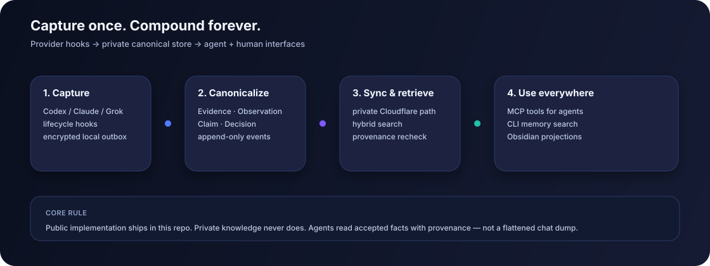

History without trust
Agent transcripts mix facts, guesses, drafts, and abandoned paths.
Keep evidence, claims, acceptance, and supersession as separate records.
CarpeOS keeps the decisions, evidence, and failure paths from AI-agent work in one place you control — with provenance intact and status explicit.
Public code. Private knowledge. Not hosted SaaS.
A real decision, a rejected approach, or a bug path often ends up split across chat history, terminal scrollback, and notes. CarpeOS keeps the trail without flattening every statement into “memory.”
Agent transcripts mix facts, guesses, drafts, and abandoned paths.
Each coding tool starts with a different memory of the work.
Generated documents drift until no one knows what was canonical.
The next machine or session has to rediscover the same decisions.
Provider hooks feed a private canonical event store. Accepted facts are derived at query time; MCP, CLI, and Obsidian remain interfaces and projections.

Selected lifecycle events enter an encrypted outbox and local store.
Evidence, observations, claims, decisions, and supersession keep distinct roles.
Search and context packs return bounded results with provenance rechecked.
People and agents work through CLI, local MCP, and rebuildable projections.
Current interfaces are local and pre-MVP. They expose the same underlying model without turning a projection into the source of truth.
Use local commands for memory search, individual records, and bounded task context.
carpeos memory context-pack
Trace evidence, capture observations, propose claims, and retrieve context through a local stdio server.
memory_context_pack
Generate Markdown from the local store. Delete and rebuild it whenever the projection drifts.
projection ≠ source of truth
CarpeOS preserves the difference between what was observed, what was proposed, what was accepted, and what was later replaced.
CarpeOS requires Node.js 22.22 or newer. The setup flow can show resolved paths and actions before it changes anything.
# install the published package
npm install -g @innocarpe/carpeos
# inspect actions first
carpeos setup plan
# apply the resolved setup
carpeos setup run --applyPre-MVP. Local interfaces are implemented; no hosted Worker, hosted MCP, or SaaS deployment is claimed.
The website stays intentionally small. Detailed contracts, guides, ADRs, and implementation status live with the public source.
A focused map of architecture, installation, capture, retrieval, and MCP references.
Open locally System designFollow the event model, trust boundaries, storage layers, and projection rules.
Read on GitHub Agent interfaceReview the local stdio tools and the contracts agents can rely on.
Read on GitHub